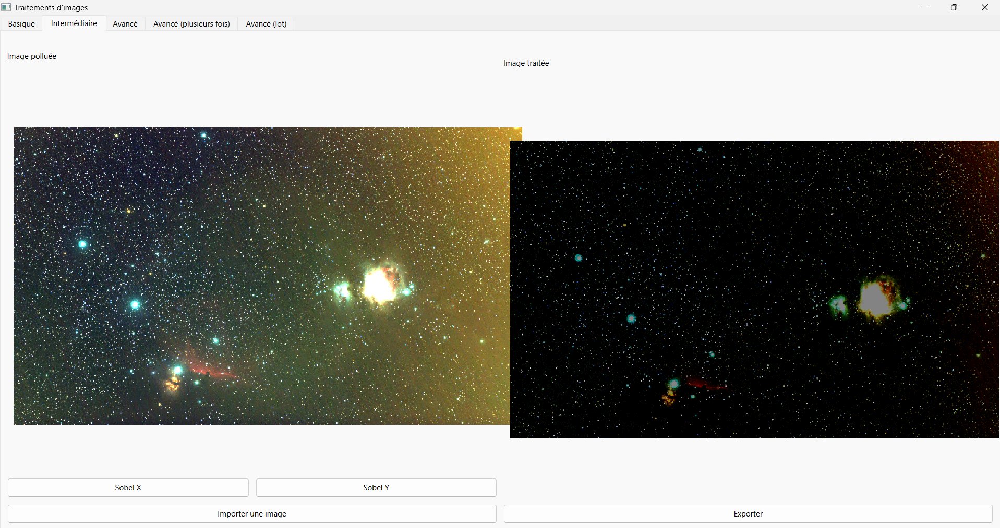
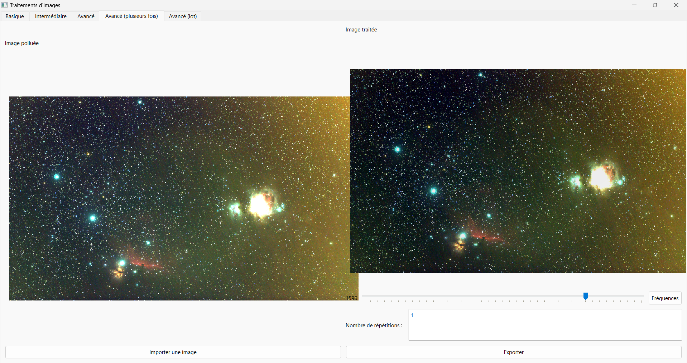
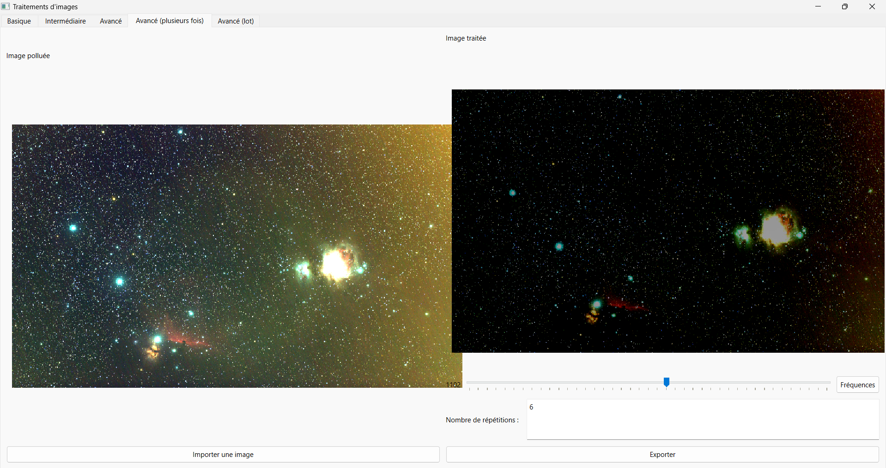
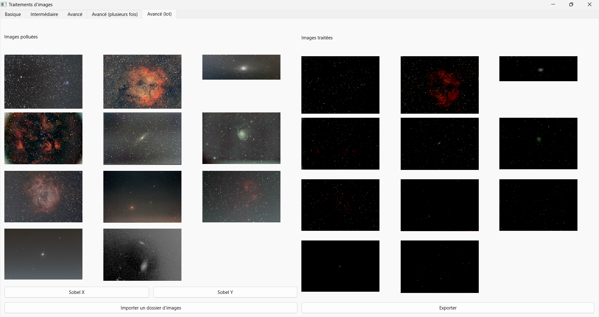

Application de traitement d'images polluées par pollution lumineuse
La pollution lumineuse est un signal supplémentaire dans l’image. La forme de ce signal est celui d’un gradient ajouté.
Pour retirer le gradient il faut d’abord l’estimer. Pour calculer le gradient on peut le considérer comme linéaire (c’est une bonne approximation). Si on souhaite un résultat plus précis on peut utiliser d’autres méthodes comme utiliser des polynômes d’ordre supérieur.
Ensuite on peut retirer le gradient. On soustraire le gradient estimé précédemment à l’image de départ.
Basique
Fonctionnement du traitement
Dans le cas de l'onglet Basique, il n'y a pas de calcul du gradient. Celui ci est déjà calculé et stocké dans un fichier.
Interface
La partie de gauche affiche l'image originale non traitée. La partie de droite affiche l'image après traitement.
La zone du bas permet d'importer le gradient et affiche le chemin complet vers le fichier. Le bouton en dessous permet d'importer l'image polluée. À droite, le bouton Traiter permet d'effectuer la soustraction du gradient importé à l'image originale. Le bouton Exporter permet de sauvegarder l'image traitée.

Intermédiaire
L'onglet intermédiaire permet d'appliquer le filtre de Sobel par X ou par Y à l'image.
Fonctionnement du traitement
Le filtre de Sobel utilise des matrices de convolution. On peut effectuer les traitements horizontalement ou verticalement. Soit la matrice qui représente l'image source et et les deux images qui contienent les approximations de la dérivée horizontale et verticale de chaque point :
et
où * représente l'opération matricielle de convolution.
En chaque point, les approximations des gradients horizontaux et verticaux peuvent être combinées comme suit pour obtenir une approximation de la norme du gradient :
Interface
La partie de gauche affiche l'image originale non traitée. La partie de droite affiche l'image après traitement.
Les boutons permettent d'appliquer le filtre de Sobel par X ou par Y sur l'image originale. Le bouton du bbas permet d'importer l'image polluée. Le bouton Exporter permet de sauvegarder l'image traitée.

Avancé
Normal
La méthode de traitement utilise la fréquence pour supprimer la pollution lumineuse. On peut sélectionner la fréquence entre 500 et 1500. On supprimer la fréquence 1 seule fois.
Bon à savoir !
Le traitement n'est effectué qu'une seule fois  . Vous pouvez directement vous rendre dans l'onglet plusieurs fois et ne faire le traitement qu'une seule fois
. Vous pouvez directement vous rendre dans l'onglet plusieurs fois et ne faire le traitement qu'une seule fois  .
.
Interface
La partie de gauche affiche l'image originale non traitée. La partie de droite affiche l'image après traitement.
À droite, un curseur permet de choisir la fréquence à appliquer. Le bouton Fréquences permet d'appliquer la fréquence à l'image originale. Le bouton Exporter permet de sauvegarder l'image traitée.

Plusieurs fois
Cette méthode reprend la méthode précédente en l'appliquant au résultat obtenu et ce à plusieurs reprise.
Interface
La partie de gauche affiche l'image originale non traitée. La partie de droite affiche l'image après traitement.
À droite, un curseur permet de choisir la fréquence à appliquer. Le bouton Fréquences permet d'appliquer la fréquence à l'image originale. On peut également choisir le nombre de répétitions à faire. Le bouton Exporter permet de sauvegarder l'image traitée.

Par lot
Il est possible de vouloir traiter un grand nombre d'images en une seule fois. Pour cela l'onglet par lot permet d'appliquer le filtre de Sobel à l'ensemble des images d'un dossier.
Interface
La partie de gauche affiche les images non traitées du dossier sélectionner. La partie de droite affiche les images après traitement.
À droite, un curseur permet de choisir la fréquence à appliquer. Le bouton Fréquences permet d'appliquer la fréquence à l'image originale. On peut également choisir le nombre de répétitions à faire. Le bouton Exporter permet de sauvegarder l'image traitée.
